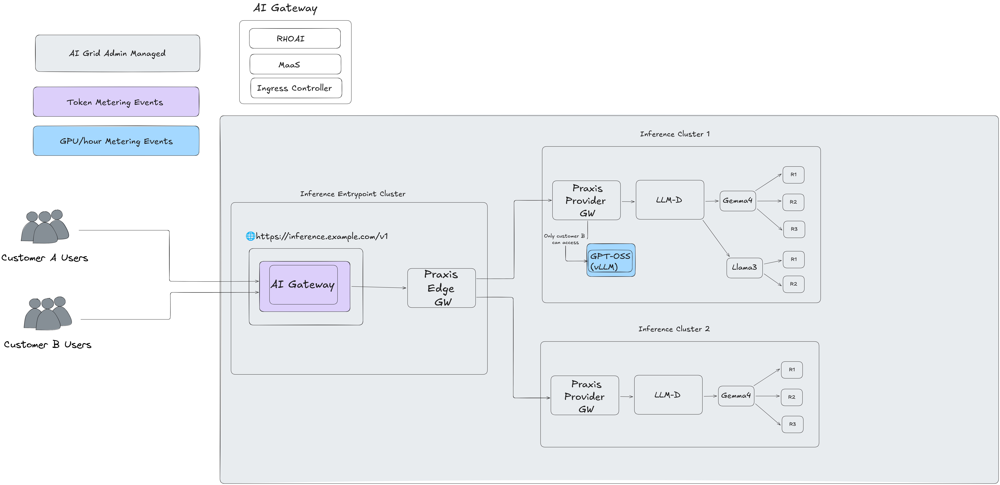
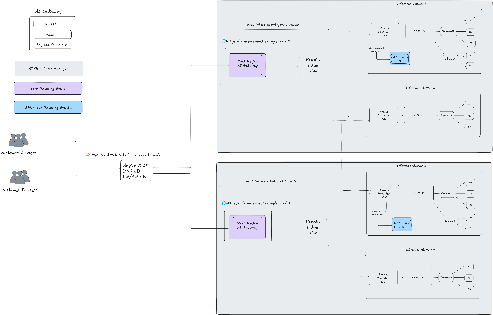

Introduction to Red Hat OpenShift AI Multi-Cluster Inference
Customers already run inference on several clusters (on-prem, a regional site, maybe a cloud burst). The painful part is that each cluster is its own island:
-
Applications hardcode endpoints and credentials.
-
Quotas and policies are configured per cluster.
-
Observability and billing data live in different places.
AI Grid is the connective tissue for those islands: one control plane, one inference endpoint, one set of policies, across every cluster you own, all built on top of an open-source stack you control.
Service Provider PoV
For a service provider, multicluster distributed inference means:
-
Exposing inference capabilities from a fleet of distributed clusters as a single entity managed by the provider.
-
Selling those capabilities to customers and doing chargeback by token consumption or GPU-hours.
-
Letting consumers use shared models published by the provider, or get their own models deployed on the provider’s distributed infrastructure.
Who asks for this: telcos and cloud providers, neoclouds, and enterprise internal providers. Organizations that want to turn distributed GPU capacity into one service to sell. Today their apps track every cluster endpoint, platform teams repeat work per cluster, and the business cannot tie GPUs to organizations. The goal is to make many clusters behave like one governed service.
Telcos and neoclouds are a natural fit: they already run large distributed deployments across the globe, have operational expertise in highly-available, high-demand environments, and can sell these services both B2B and B2C.
The Journey to Multicluster Inference
No customer arrives at a fully federated, sovereign AI Grid on day one. We foresee three main stages during this journey:
-
Single-cluster foundation: Isolation and multi-tenancy within one cluster.
-
Single-tenant multi-cluster governance: Fleet management for inference; multiple (potentially heterogeneous) clusters under one control plane and AI Gateway, with central policy authority, centralized quota management and routing.
-
Sovereign AI Grid: Fleet operations, organization onboarding, routing and usage economics operate as one product, letting the operator monetize infrastructure as a token/inference business.
The lab focuses on stage 2 to 3, based on OpenShift AI v3.6: A hub-and-spoke architecture for multi-cluster routing, model deployment onto a multi-cluster MaaS, and per-organization/per-user usage recording at the gateway.
Distributed Multi-Cluster Inference architecture
The reference architecture separates where requests enter from where inference runs, connected by an AI Gateway layer.

The sections below describe the role of each component. For a deeper description of each, see Components Breakdown.
Inference Entrypoint Clusters
An entrypoint cluster is where client traffic arrives. It hosts the MaaS AI Gateway (API keys, subscriptions, model catalog, auth, rate limiting, token metering; see MaaS) and the Praxis Edge/Consumer gateway that connects out to the inference clusters. It publishes a single, stable, model-addressable endpoint (for example https://inference.example.com/v1) and is responsible for:
-
Authenticating the external caller (API key).
-
Parsing the request to extract the target model (and, for agentic traffic, the MCP tool).
-
Selecting an eligible provider from the locally-loaded routing overlay and forwarding over cross-site mTLS.
-
Recording usage (tokens, and in later phases GPU-hours) per organization and per user at the gateway.
Entrypoint clusters do not need to host GPUs. In a multi-region design there are multiple entrypoint clusters (for example one per region), each publishing a region-local endpoint, with a GLBS in front of them).
Inference Clusters
An inference cluster is where models actually run. It hosts the Praxis Provider Gateway and the serving stack (llm-d / vLLM through KServe). It is responsible for:
-
Authenticating the calling Praxis Edge/Consumer Gateway (mTLS peer identity).
-
Validating the selected candidate against provider-local policy.
-
Injecting any provider-owned, final-hop credential for the backend call.
-
Routing to an authorized private inference backend.
Inference clusters can be heterogeneous (different GPU vendors/generations), different locations (central hall, edge site, sovereign enclave, partner DC), and can expose both shared models (available to many organizations) and dedicated models (restricted to a single customer; for example a GPT-OSS (vLLM) endpoint that only Customer B can access).
| Bring your own model feature won’t be available during the RHOAI 3.6 release, it’s a feature expected for RHOAI 3.7. |
AI Gateways
The architecture has three distinct gateways, and they are not all the same software. They chain together on the request path:
client → AI Gateway (MaaS) → Praxis Edge/Consumer GW → (mTLS) → Praxis Provider GW → vLLM/llm-d-
AI Gateway (MaaS): The organization-facing entry on the entrypoint cluster. It publishes the single OpenAI-compatible endpoint and enforces the MaaS policy surface: API-key authentication, subscription authorization, rate limiting, and token metering.
-
In RHOAI 3.6 this gateway is Envoy-based (Gateway API + Istio, with Kuadrant / Authorino / Limitador).
-
In RHOAI 3.7 the plan is moving to a Praxis-based gateway.
-
-
Praxis Edge / Consumer Gateway: The connectivity layer to the inference clusters. It makes the routing decision (which cluster serves the request) from the routing state the AI Grid control plane distributes to it (see Routing Overlay and Candidates), and forwards to the chosen cluster over gateway-to-gateway mTLS. It does not talk to inference servers directly.
-
Praxis Provider Gateway: A Praxis gateway that sits in front of the inference servers (vLLM / llm-d) on an inference cluster. It authenticates the calling Edge/Consumer peer, validates the selected candidate and route, and load-balances to an authorized local backend.
Multi-Cluster Inference routing
The promise is one endpoint. Users never reason about clusters. Behind that endpoint, the platform chooses where each request runs based on signals such as model availability, load, KV-cache hits, latency, token cost, and geo location.
Why Multi-Cluster Routing is Hard
Without a grid control plane, every gateway would need static, hand-maintained knowledge of every:
-
Model backend
-
Remote cluster
-
Credential
-
Health Signal
-
Fallbacks
That does not scale across multi-cluster, multi-vendor, and multi-region.
Challenges presented by Multi-Cluster Routing:
-
Discovery & liveness: Which sites exist and which are currently alive.
-
State propagation: What each site is serving, and at what capacity/health, without a single central database that becomes a bottleneck or a single point of failure.
-
Governed placement: Honoring sovereignty/residency, organization entitlements, and isolation before optimizing for latency/cost/utilization.
-
Hot-path locality: A request must not call Kubernetes, the gossip layer, or the operator to decide where to go; the decision must be served from local state.
-
Trust: A discovered peer is not an authorized peer; identity must be enforced on every request, not assumed from membership.
-
Usage accounting: Tokens consumed must be attributed to the right organization and user consistently, no matter which cluster served the request.
How Praxis grid addresses these challenges:
| Challenge | Why it is hard | How the algorithm handles it |
|---|---|---|
Herding |
Every gateway reads the same stale "least-loaded" number and piles onto the same cluster. |
Draw two candidates by capacity and keep the lighter; near-ties stay ties (power of two choices). |
Stale signals |
Load readings are seconds old (older still from remote sites). |
Decide per refresh. No reading ever ranks last or is treated as idle. |
Multi-turn KV cache |
The cache never moves between clusters, so the wrong cluster recomputes the whole conversation. |
Stay on the cluster holding the prefix unless queueing there costs more. |
Mixed clusters |
Large and small, near and far, all serving one model. |
Weight every draw by learned capacity. |
First-turn placement |
The first turn decides where a conversation lives; a returning cluster can sit idle. |
Place new conversations by capacity. |
Unknown capacity |
Engines do not publish slot limits; cache use can look idle while a queue grows. |
Learn capacity from observed load (and have engines publish their limits). |
Where does Global LoadBalancer Service Fit?
In distributed multi-cluster inference scenarios, external ingress to the platform uses two independent routing decisions:
-
A Global Load Balancing Service (GLBS): For example: a managed DNS, Anycast, or a global traffic manager. Owns the stable public name (i.e:
my-distributed-inference.example.com), edge health checking, public traffic steering, and edge withdrawal. It selects which entrypoint/edge a client reaches (typically the nearest healthy one). -
AI Grid Network (AGN) routing (see AI Grid Networking): Begins after a request reaches a regional AI gateway. The regional gateway authenticates and parses the request, then selects an eligible inference cluster to serve the request.
A multi-cluster multi-region architecture looks like this:

GLBS and AGN are complementary, while GLBS handles client → edge availability and geo-steering; AGN handles edge → inference provider governed, capacity-aware and policy-aware selection. The edge and provider fleets are independently replicated. An east edge may legitimately select a west provider and vice versa.
In the multi-region lab diagram this GLBS layer appears as the AnyCast IP / DNS LB / HW/SW LB box in front of the regional entrypoints.
How Intelligent Routing works
The AGN selection is the same shape as the llm-d Endpoint Picker (EPP), however picking clusters instead of pods. On every request the gateway runs three stages against the latest load from every cluster:
-
Filter: Reduce the candidate set to clusters that can serve this request:
-
Model: The cluster serves the requested model.
-
Health: The cluster/provider is healthy.
-
Region: Honoring geography/residency constraints.
-
Affinity: Prefer a cluster already holding this conversation’s cache.
-
-
Score: Rank the survivors from provider signals.
-
In-flight request: Current load.
-
Learned ceiling: The capacity the grid has learned for that cluster.
-
KV-cache saturation: How full the attention cache is.
-
-
Pick: Choose using power of two choices (draw two candidates weighted by capacity, keep the less saturated one). Once the request reaches the inference cluster, the inference provider (llm-d EPP) takes the last mile and picks the pod that serves the request.
Keeping the KV Cache Warm
Cache hits matter because chats and agents resend the prompt: a hit means less GPU time and a faster first token, and with prefill/decode (P/D) disaggregation it can skip the KV transfer entirely. KV cache never crosses clusters, so routing tries to keep a conversation where its prefix already lives:
-
Hash the prompt (no tokenizer needed).
-
Map each prompt block to the cluster that holds it.
-
Stick to the best-matching cluster.
-
Yield: give up the cache hit (when staying would queue longer than moving).
Again this is two-level: the grid picks the right cluster; the EPP picks the right pod. The system will deliberately give up a cache hit to avoid a slow cluster.
Learning the Grid Capacity
Grid capacity is not declared, instead the grid learns it from how each server handles load. This is what lets a heterogeneous fleet (large/small, near/far) share one model fairly.
For example, during a validation run this was the observed behavior:
-
Traffic follows capacity: Under the same rising load, a naive "least loaded" policy swings all traffic between clusters, while intelligent routing keeps every cluster busy near its capacity share.
-
Less capacity, less traffic: Across four servers of different capacity on two sites, 3,183 requests were all served with no errors, and the smallest remote site received ~14% of traffic versus an even 25% (proportional to its learned capacity).